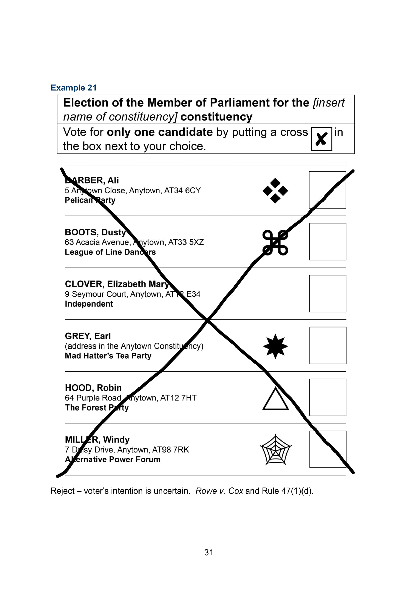

In this section we'll be looking at how the leadership (the government) is setup and organised in a fair democracy. The government is not a single unit, but rather consists of three parts, with no person technically being allowed to belong to more than one part, though there is often minor overlap.
This concept is called separation of powers. This exists to ensure that for example, people cannot create laws (as part of the legislative) that they can execute (as part of the executive) to help themselves financially or give themselves more power, or ignore laws they've broken (as part of the judiciary). The three parts keep each other in check, which is known as having checks and balances.
Another concept is devolution, which is transfer of power from the central government to local government. When this transfer of power is permanent, protected and extensive, it is known as federalism and countries operating like this are know as federal states, such as the United States of America and Australia, where policies between states can be significantly different. The United Kingdom on the other hand is a unitary state, meaning the majority of power rests with the central government.
The executive and legislative is what most people consider to be the government, as this is the area of government that politicians are involved in, as opposed to judges in the judiciary.
The legislative branch of the government can be unicameral, containing
one
house, or bicameral, containing two houses. Most governments have a
bicameral system to avoid having power concentrated in one group.
The United
Kingdom legislative branch is called the Parliament of the United
Kingdom and
consists of the House of Commons and the House of
Lords.
The United States
legislative branch is called the Congress and consists of the
House of Representativesand the Senate.
The bicameral systems typically have a:
Lower house (House
of Commons, House
of Representatives) which consists of members directly elected by
the general population, and an
Upper house (House of Lords,
Senate)
consisting of members who are separately appointed in some manner.
Members who are elected to the lower house are often part of groups called parties, which as mentioned befored are groups of people who hold similar political ideologies. The leaders of the party are the face of the election campaigns. Though their individual personalities and characteristics can have a significant influence on the outcome of the election, citizens are in reality voting for the party. Party members don't stand for election nationally, but rather for a specific region, and if their party gets the most votes in that region, they are said to then go on to represent that region in parliament. The head of the government is the leader of the party that then has the most representatives in government. This party is said to have the majority, while the party getting the second highest number of votes is said to have the minority, or be the opposition.
You may come across the terms head of state and head of government. These terms exists because historically the head of the state was the king and as countries evolved to incorporate democracy and have elected governments, there was also the head of the government. In countries that evolved this way, the head of state role is now largely ceremonial. For example, in the United Kingdom the head of government is the Prime Minister, while the head of state is Queen Elizabeth II.
You would have likely heard the terms Prime Minister and President, and that some countries have one and not the other. This happens because it's based on one of two primary ways that the executive branch is set up, the parliamentary system and presidential system. Depending on how system a country uses, it changes, which title is effectively the head of government and has the most power. The executive also consists of the heads of the different government departments.
In a parliamentary system, the executive branch often derives from the legislative, with the head of the executive branch also being the head of the legislative branch. This though infringing on the concept of separation of powers, still works because checks and balances are maintained through other processes, like having a separate head of state or other laws that are in place to limit power.
United Kingdom follows a parliamentary system; the head is the Prime Minister, who is the leader of the party that won a majority of votes in the general election. The executive is called the Cabinet and the rest of the members are selected by the Prime Minister, and they are called Cabinet Ministers.
In a presidential system, there is stricter separation between the executive and the legislature. The President is the head of the executive, while the Prime Minister (if one exists) is the head of the legislature.
The United States follows a presidential system; the head is the President, who is the leader of the party who received the majority of votes in the general election. The executive is also called the Cabinet and chosen by the President. The leaders of Congress meanwhile are elected by their respective houses (House of Representatives and Senate). Each house, from their respective parties elect a Majority Leader, Majority Whip, Minority Leader and Minority Whip. The main leader of the Congress is the Speaker of the House, who is elected by the House of Representatives, by both the majority and minority party.
Voting is the way through which everyone in a democracy can participate in the political process. It's important to vote even if you feel the party you would like to win stands little change of winning in your region. This is because it shows support for the policies that party is advocating for, and makes it more likely that the winning party will pay attention to them. Even if you don't want to vote, because for example you highly disagree with all parties or feel disillusioned with the political process and you feel you aren't truly being heard, you can make this known to the government by 'spoiling the ballot'. You do this by submitting a ballot that is ineligible, like the example below. These are recorded and counted. They won't be a vote towards any party, and instead reflect on the number of dissatisfied voters.
Before voting it's important to first understand what your views are and what changes you would like to be made in society. Hopefully this resource you have just gone through has contributed to that. Some more resources include:
Don't forget that you should remain open to your views changing, and open to difficult conversation on controversial political issues. Debate is the primary means by which politicians come to a consensus on a decision, and this should be reflected by the citizens
Secondly you need to find the party that most fits your views and the changes you want to see made. This is best done by reading each party's manifesto, which they publish before each election. This overview of the parties ideology and policies is important, as parties often attempt to polarise the population by focusing on one specific policy, which although might be important to you, will only be one aspect of what the pary is attempting to do.
Often in the weeks to months before a general election, there will be increased discussion both in person and on social media and you may come across propoganda, which is political information, often of a misleading nature, designed to promote a particular point of view. It can be useful to check these claims on fact checking websites such as Full Fact
Other than voting, an easy way to get involved is via petitions. In the UK, if a petition gets 10,000 signatures, it must be responded to by the government. If a petition gets 100,000 signatures, it will be considered for debate, which it nearly always is.
You can also join pressure groups to raise awareness on specific issues. A list of United Kingdom pressure groups can be found here